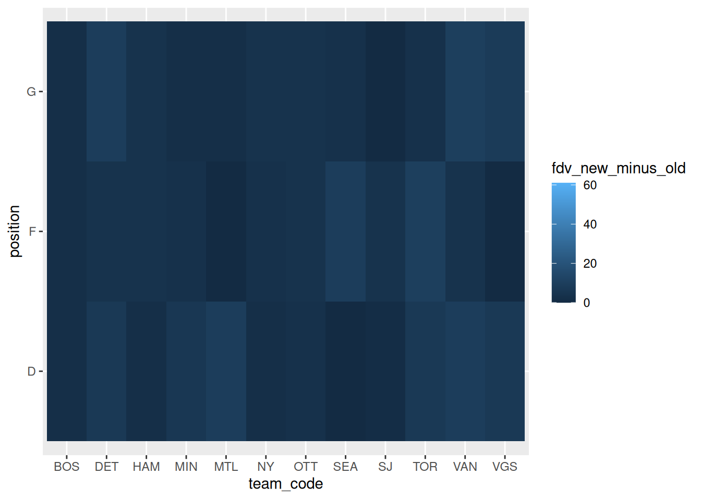

Fantasy Draft Data
For the 2026-2027 season, we are making two changes to the fantasy league regarding fantasy points and fantasy team drafting. First, the new structure for scoring fantasy points is as follows:
| Skaters | Goalies |
|---|---|
| 🏒 2 pts/goal 🤝 1 pt/assist 🎯 0.1 pts/shot ⛔ 0.1 pts/blocked shot ✨ 2 pts/win 😖 0 pts/loss 🥇 1 pt/OT loss |
🧱 1 pt/shutout ⛔ 0.05 pts/save ✨ 2 pts/win 😖 0 pts/loss 🥇 1 pt/OT loss |
Second, all PWHL players will be assigned a Fantasy Draft Value (FDV), and a Value Cap will be imposed to the fantasy teams that will be drafted this year. The FDV will be computed based on the new fantasy point structure applied retroactively to the 2025-2026 season.
2026-2027 Season
Assigning the FDV
The FDV will be assigned differently based on whether the player is a new rookie in the upcoming season. In each case however, instead of looking at Fantasy Points (FP) earned last year, we look at the Projected Fantasy Points (PFP) earned last year. The PFP are defined as follows:
\[ \text{PFP} = 30 * \frac{\text{FP}}{\text{GP}}, \]
where \(GP:=\) games played.
We take the average number of FP earned per game played and multiply that by the total number of games in a season for one team (30) to estimate how many FP would have been earned if the player played every game of the season.
Non-rookie
If the player is not a rookie, the FDV is is simply the player’s earned PFP last season, rounded to the nearest integer.
Rookie
After last season, all of the rookies of that season have accumulated fantasy points from their performance (duh). We will look at two plots. First, a scatter plot of PFPs earned by overall draft position, split by player position:
-1.png)
-1.png)
-1.png)
There is clearly not a perfect correlation between PFP and overall draft position, but this is expected. However, there is a general trend of higher PFPs as overall draft position is lowered.
On the other hand, when looking at PFPs earned sorted in descending order, we get somewhat of an exponential distribution (at least, with enough data points):
PFPs earned, sorted in descending order
-1.png)
-1.png)
-1.png)
Note
We secretly replaced all PFPs less than \(\mathrm{e}\) with \(\mathrm{e}\), just so that the exponential fit would never yield negative values. You’ll see why soon…
Rather than using PFPs by overall draft position for the last season, we are going to use the exponential curve approximating the PFPs descending in order to inform how the FDVs get assigned to the rookies in the upcoming season. The formula for the FDV for new rookies will be as follows:
\[ \text{FDV} = \max\left( \text{round}\left(\exp \left( b_\text{p} + m_\text{p}\cdot\left(1+(\text{n}_\text{draft}^\text{p} - 1)\cdot\frac{\text{N}_\text{rookies,t-1}^\text{p}-1}{\text{N}_\text{rookies,t}^\text{p}}\right)\right)\right), 1\right), \]
where:
- \(\text{n}_\text{draft}^\text{p}\in\{1,\ldots,\text{N}_\text{rookie,t}^\text{p}\}:=\) sequential draft order position of new rookie, relative to other rookies of the same position \(\text{p}\)
- \(\text{N}_\text{rookies,t}^\text{p}:=\) number of new rookies of position \(\text{p}\) in year \(t\) (this year)
- \(\text{N}_\text{rookies,t-1}^\text{p}:=\) number of new rookies of position \(\text{p}\) in year \(t-1\) (last year)
- \(b_\text{p}:=\) intercept of the line fit to the \(\log\) of the descending PFPs for position \(\text{p}\)
- \(m_\text{p}:=\) slope of the line fit to the \(\log\) of the descending PFPs for position $
The idea behind this formula is that we map \(\text{N}_\text{rookies,t}^\text{p}\) equal points to the support of the fit exponential curve, which is \(\{1,\ldots,\text{N}_\text{rookie,t-1}^\text{p}\}\). Under this mapping, the first overall draft pick of a given position (e.g. K.K. Harvey, Defender for the 2026-2027 season) should be mapped to the PFP estimate corresponding to the first overall draft pick of that same position of the 2025-2026 season (Haley Winn), the last overall draft pick of a given position for the 2026-2027 season should be mapped to the PFP estimate corresponding to the last overall draft pick if the same position of the 2025-2026 season, and each draft pick in between for the 2026-2027 season should be evenly spaced out between \(1\) and \(\text{N}_\text{rookie,t-1}^\text{p}\); this yields a spacing of \(\frac{\text{N}_\text{rookies,t-1}^\text{p}-1}{\text{N}_\text{rookies,t}^\text{p}}\)
Note that this whole process only works for rookies who were drafted during the officvial 2026 PWHL Draft. For players who were not in the PWHL last year or did not get drafted during the official draft (e.g. player agreements in the off-season), we have no way to programatically infer their skill from either their past performance or their draft order. In this case, we assign draft values based on age:
- For the 2026-2027 season, the youngest player in the league was born in 2005.
- All players who were not present in the PWHL last year or selected in the 2026 PWHL Draft are assigned a FDV of 1 if they are born in 2005, 2 if they are born in 2004, etc.
- In the absence of any other information, we will assume older players have more experience and therefore are worth more.
The FDVs for the new rookies of the 2026-2027 season are therefore:
Recalling that there is not a good correlation between PFPs earned and overall draft position, we feel this approach will be interesting because:
- The overall distribution of FDVs assigned to new rookies agrees with the performance of the rookie class last year
- It’ still a risk drafting a rookie as seen in the PFPs earned over draft order chart, but the early draft picks are probably going to pay off in some capacity.
- There is some imbalance with regard to position under the new scoring scheme (see table below) but at least this is reflected in how the rookies are assigned their FDVs.
Value Cap
To determine the value cap for the Fantasy League draft, we find the 75th percentile of FDVs by position and multiply these by the number of allotted slots per position, respectively. The percentiles are as follows:
Therefore, the salary cap is computed as 6*62 + 4*60 + 2*4 = 620, which we will round up to 300 for a treat.
2025-2026 Season
We can check how this process for assigning FDVs compares against actual FP earned by computing FDVs for the 2025-2026 roster based on the 2024-2025 season and then aggregating all PFP/FP earned during the 2025-2026 season.
FP/PFP vs. FDV
Plots

Fantasy teams
Suppose the teams that were drafted during the 2025-2026 fantasy season included the FDVs for that season. We can compare the sum of these FDVs, representing the ‘cost’ of the fantasy team, against the FP output of the team throughout the season.